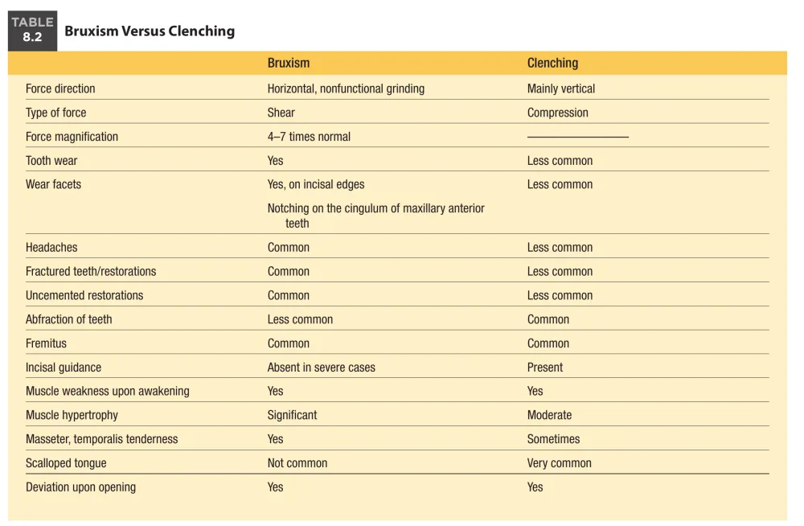
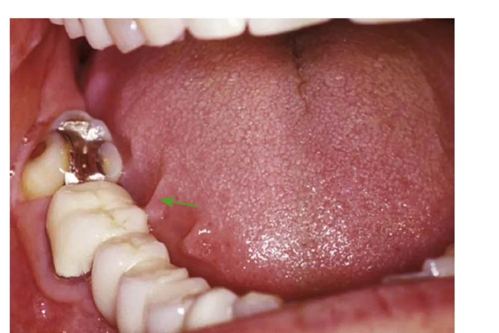

نسخه استخراجشده؛ ترجمه یا تأیید علمی انجام نشده است. وضعیت: captured
براکسیسم و کلنچینگ اغلب با هم گفته میشوند، ولی نشانههایشان آنها را از هم جدا میکند. و تفاوت بنیادیشان در نوع نیروست — که از یونیت اول میدانی چقدر تعیینکننده است.
تفاوت بنیادی:
• براکسیسم: جهت نیرو افقی و سایش غیرعملکردی، نوع نیرو برشی
• کلنچینگ: جهت نیرو عمدتاً عمودی، نوع نیرو فشاری
و حالا معنایش را بفهم: از یونیت اول میدانی که برش مخربترین و فشار مطلوبترین نوع نیروست. پس همین یک سطر توضیح میدهد چرا براکسیسم امتیاز ۱۰ میگیرد و کلنچینگ ۹.
و عدد تشدید نیرو: برای براکسیسم «۴ تا ۷ برابر طبیعی» است — و برای کلنچینگ عددی گزارش نشده است.
نشانههایی که براکسیسم را بیشتر میسازد:
• سایش دندان: بله (در کلنچینگ کمتر شایع)
• فاست سایش: بله، روی لبههای انسیزال؛ و نچینگ سینگولوم دندانهای قدامی ماگزیلا (در کلنچینگ کمتر شایع)
• سردرد: شایع (در کلنچینگ کمتر شایع)
• شکست دندان یا رستوریشن: شایع (در کلنچینگ کمتر شایع)
• رستوریشنهای بدون سمان: شایع (در کلنچینگ کمتر شایع)
• هایپرتروفی عضلانی: چشمگیر (در کلنچینگ متوسط)
• حساسیت ماستر و تمپورالیس: بله (در کلنچینگ گاهی)
• گاید انسیزال: در موارد شدید غایب (در کلنچینگ حاضر)
و دو نشانه که برعکساند و کلنچینگ را میسازند:
• ابفراکشن دندان: در کلنچینگ شایع — در براکسیسم کمتر شایع
• زبان کنگرهدار (scalloped tongue): در کلنچینگ بسیار شایع — در براکسیسم ناشایع
این دو نشانه ارزش تشخیصی بالایی دارند، چون جهتشان با بقیه فرق دارد و بنابراین تفکیککنندهاند.
و سه نشانه که در هر دو مشترکاند و بنابراین کمکی به تفکیک نمیکنند: فرمیتوس، ضعف عضلانی هنگام بیداری، انحراف هنگام باز کردن.
پس منطق تشخیص افتراقی روشن است: برای تفکیک، به سراغ سایش، ابفراکشن، و زبان کنگرهدار برو — نه به سراغ نشانههای مشترک.

مهمترین درمان — و در این باره هیچ ابهامی نیست:
«مهمترین درمان برای بیمار با عادتهای پارافانکشنال، استفاده از گارد اکلوزال است.»
و مشخصاتش: «بهطور ایدهآل بیماران باید یک گارد اکلوزال آکریلی سخت و پروسسشده در زمانهای فعالیت پارافانکشنال بپوشند. گارد اکثر نیروهای پارافانکشنال را جذب میکند و نیروهای آسیبرسان به سیستم ایمپلنت را کاهش میدهد.»
و یک توصیهی عملی که اغلب گفته نمیشود: «بیماران باید همچنین آموزش ببینند که گارد را در هر زمانی که ممکن است پارافانکشن نشان دهند بپوشند، مانند دورههای پرتنش، رانندگی، و کار با کامپیوتر.»
یعنی گارد فقط شبانه نیست. و این نکته برای بیمار غافلگیرکننده است — پس باید صریح گفته شود.
در کلنچینگ اثر گارد کمتر است؛ با این حال گاردی با پوستهی آکریلی سخت و لاینر نرم که روی ایمپلنتها کمی آزاد شده، اغلب برای بیمار کلنچر سودمند است.
و عددی که ارزش گارد را ثابت میکند:
«بیمارانی که براکسیسم داشتند و گارد شبانه نداشتند، تقریباً هفت برابر نرخ شکست پرسلن داشتند.»
هفت برابر. این یکی از قویترین اعداد در کل این ماژول است — و مستقیماً در گفتوگو با بیمار قابل استفاده.
و اصل اکلوزالی که پشت آن است:
توصیهی استاندارد: «حذف تماسهای اکلوزالی جانبی خلفی (یعنی بارگذاری غیرمحوری) در حرکات اکسکورسیو» — به دو دلیل:
دلیل اول (مکانیکی): «نیروهای جانبی بهشکل چشمگیری استرس را در رابط ایمپلنتـاستخوان افزایش میدهند، و حذف تماسهای خلفی اثر منفی نیروهای زاویهدار حین براکسیسم را کم میکند.»
دلیل دوم (عضلانی) — و این ظریفتر است: «با حضور تماسهای خلفی حین اکسکورسیون، تقریباً همهی فیبرهای عضلات ماستر، تمپورالیس و پتریگوئید خارجی منقبض میشوند و نیروهای بالاتری بر دندانها/ایمپلنتهای قدامی وارد میکنند.»
و عدد اثرش: «حین اکسکورسیونهای اکلوزالی در نبود تماسهای خلفی، فیبرهای کمتری از عضلات تمپورالیس و ماستر تحریک میشوند، و نیروهای اعمالشده بر سیستم ایمپلنت/دندان قدامی تا دو سوم کاهش مییابند.»
دو سوم کاهش، فقط از حذف تماس خلفی در اکسکورسیون. یعنی طراحی اکلوزال یک مداخلهی عصبیـعضلانی است، نه صرفاً یک تنظیم مکانیکی.
و طراحی پروتز برای بیمار پارافانکشنال: این فهرست را به خاطر بسپار — تماسهای عمودی سنتریک همراستا با محور طولی ایمپلنت، میزهای اکلوزالی خلفی باریک برای پیشگیری از نیروهای جانبی ناخواسته، ایناملوپلاستی نوک کاسپ دندانهای طبیعی مقابل برای بهبود جهت نیروهای عمودی، مواد اکلوزالی تازهتر (مانند زیرکونیا)، بدنههای ایمپلنت پهنتر، سمانهای سختتر (رزین در برابر اکسید روی)، بدنههای ایمپلنت آلیاژ تیتانیوم، و ایمپلنتهای بیشتر اسپلینتشده.
حالا تراست زبان:
تعریفش: «تراست زبان پارافانکشنال، نیروی غیرطبیعی زبان بر دندانها حین بلع است.»
و عددش: «نیرویی تقریباً ۴۱ تا ۷۰۹ گرم بر سانتیمتر مربع بر نواحی قدامی و جانبی کام حین بلع ثبت شده است.»
و یک مقایسه این عدد را معنادار میکند: «در حرکت ارتودنسی، چند گرم نیروی پیوسته برای جابهجا کردن دندانها کافی است.»
چند گرم برای جابهجا کردن دندان کافی است — و زبان صدها گرم وارد میکند. و با اینکه شدتش از دیگر نیروهای پارافانکشنال کمتر است، جهتش افقی است و میتواند استرس را در محل عبور ایمپلنت از مخاط بالا ببرد — بهویژه در جراحی یکمرحلهای، وقتی رابط هنوز در مرحلهی ترمیم اولیه است.
و شش نوع دارد: «شش نوع مختلف تراست زبان شناسایی شدهاند: قدامی، میانی، خلفی، و هر یک بهصورت یکطرفه یا دوطرفه، و در تقریباً هر ترکیبی.»
